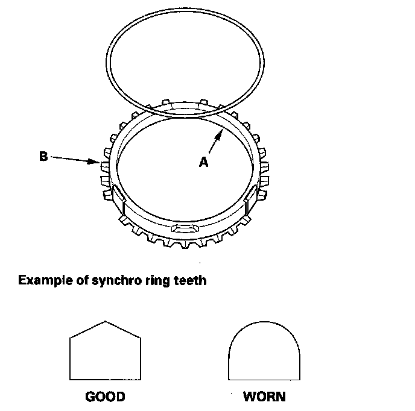
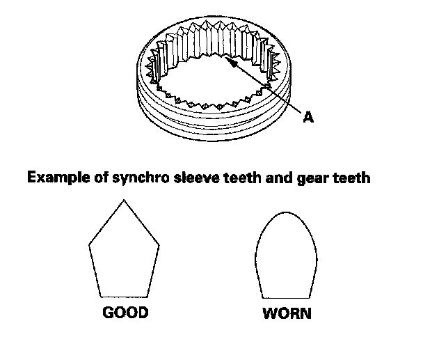
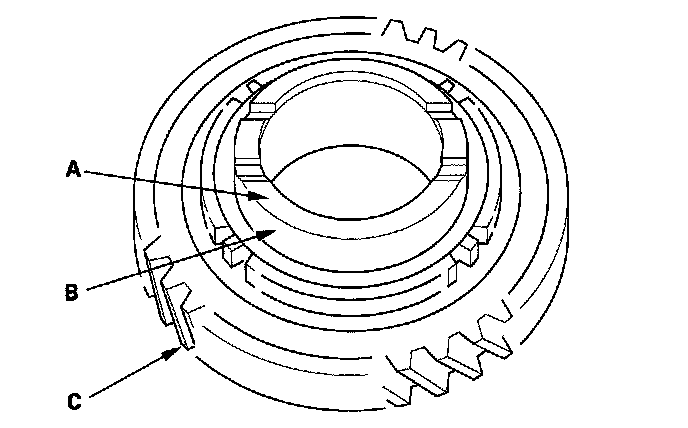
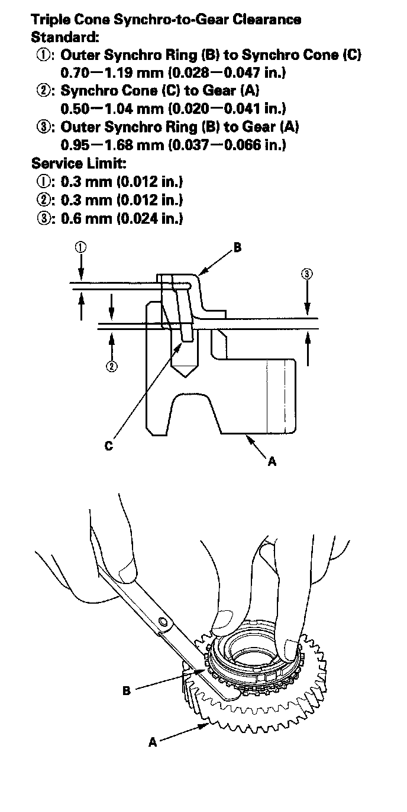

Synchro Ring and Gear Inspection
Synchro Ring and Gear Inspection1. Inspect the inside of each synchro, ring (A) for wear. Inspect the teeth (B) on each synchro ring for wear (rounded off).

2. Inspect the teeth (A) on each synchro sleeve and matching teeth on each gear for wear (rounded off).

3. Inspect the thrust surface (A) on each gear hub for wear.

4. Inspect the cone surface (B) on each gear hub for wear and roughness.
5. Inspect the teeth on all gears (C) for uneven wear, scoring, and cracks.
6. Coat the cone surface of each gear with MTF, and place its synchro ring on it. Rotate the synchro ring, making sure that it does not slip.
7. Measure clearance between each gear (A) and its synchro ring (B) all around the gear. Hold the synchro ring against the gear evenly while measuring the clearance. If the clearance is less than the service limit, replace the synchro ring and gear.
Synchro-Ring-to-Gear Clearance
Standard: 0.70 - 1.49 mm (0.028 - 0.059 in.)
Service Limit: 0.4 mm (0.016 in.)
Double Cone Synchro-to-Gear Clearance Standard:
(1)Outer Synchro Ring (B) to Synchro Cone (C) 0.70 - 1.19 mm (0.028 - 0.047 in.)
(2)Synchro Cone (C) to Gear (A) 0.50 - 1.04 mm (0.020 - 0.041 in.)
(3)Outer Synchro Ring (B) to Gear (A) 0.95 - 1.68 mm (0.037 - 0.066 in.)
Service Limit:
0.3 mm (0.012 in.)
0.3 mm (0.012 in.)
0.6 mm (0.024 in.)
